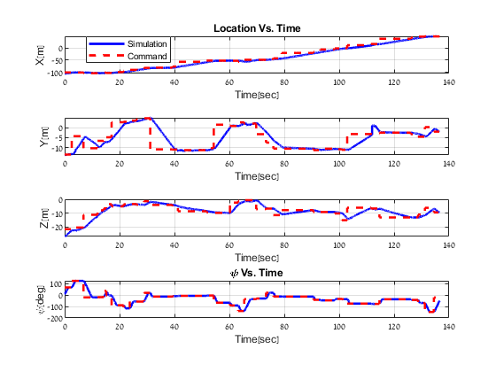
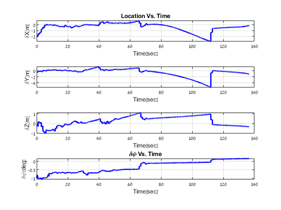
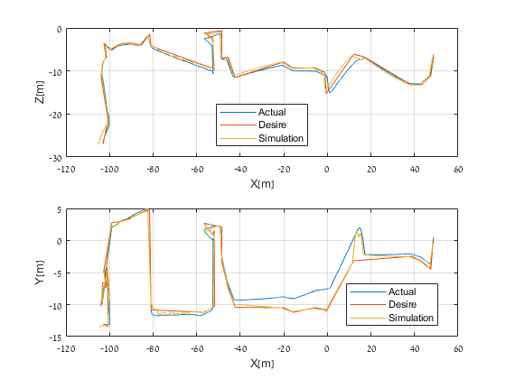
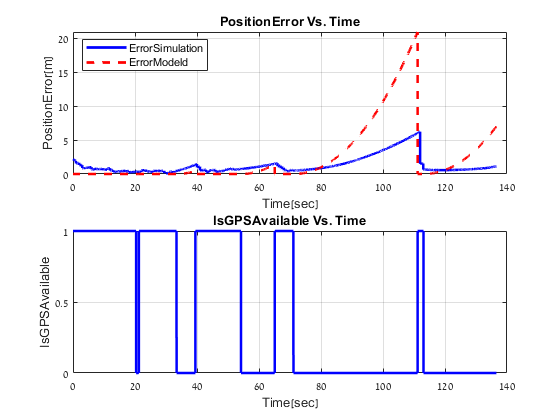
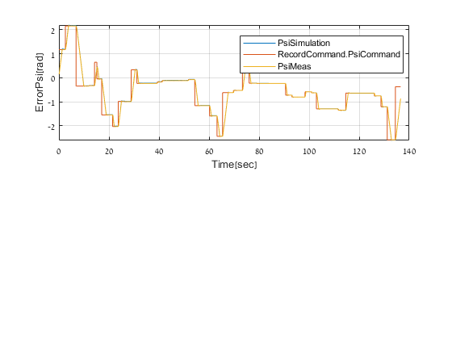

Contents
clc clear all close all % addpath InitFunction addpath ServiceFunction addpath Control addpath Command addpath PostProcess addpath StepFunction
Initilize;
ScenarioParameter = InitScenario; IMUParameters = InitIMU(ScenarioParameter); Quad = InitQuad; Control = InitControl; Command = InitCommand(ScenarioParameter.Rootfolder); [State,Command] = InitState(IMUParameters,Command,ScenarioParameter.ScenarioMode); [NavState,Command] = InitNavState(Command,State,ScenarioParameter); %todo Command.PoseSimulation = [State.X',State.psi,State.theta,NavState.theta,i]; % EKF = InitEKF(NavState,IMUParameters,ScenarioParameter); DynamicStateParameter = InitDynamic(ScenarioParameter,State); SensorMeas = GetSensorMeas(DynamicStateParameter,IMUParameters); DynamicNavStateParameter = UpdateNavDynamic(SensorMeas,NavState); State = UpdateTrueIMUBias(SensorMeas,DynamicStateParameter,State);
Step
InitRecordParameter;%[RecordState,RecordNavState,RecordEKF,RecordCommand,RecordScenarioParameter]= InitRecordParameter(State,NavState,EKF,1); time = 0; t = 0; for i=1:1:(ScenarioParameter.FinalTime/ScenarioParameter.dt) % Update State State = UpdateState(ScenarioParameter,State,DynamicStateParameter.f_b,DynamicStateParameter.w_b); NavState = UpdateNavState(ScenarioParameter,NavState,DynamicNavStateParameter.f_b,DynamicNavStateParameter.w_b,IMUParameters); % EKF update ScenarioParameter.isGPSAvailable = checkGPSAvailable(State); if (ScenarioParameter.IdealIMU==0) [NavState,EKF] = EKFStep(ScenarioParameter,NavState,State,DynamicNavStateParameter,EKF,i); end if (ScenarioParameter.ScenarioMode>0)% not static % Implement Controller Control = UpdateControl(Control,NavState,Command.X_des_GF,Command.psi_des,DynamicNavStateParameter,Quad,ScenarioParameter.g,ScenarioParameter.dt); Control.init=1; end % DynamicsAndKinematic DynamicStateParameter = UpdateDynamic(ScenarioParameter,DynamicStateParameter,State,Control,Quad,time); SensorMeas = GetSensorMeas(DynamicStateParameter,IMUParameters); DynamicNavStateParameter = UpdateNavDynamic(SensorMeas,NavState); State = UpdateTrueIMUBias(SensorMeas,DynamicStateParameter,State); if (Command.Finish_pose_command ) break; end if (ScenarioParameter.ScenarioMode>0)% not static [Command,Control]=UpdateCommandAndInitlizeControl(State,Command,Control,NavState,ScenarioParameter.ScenarioMode,i); end % checkPOI;%Command = checkPOI(State,Environment,Command); % CheckCollision;%Environment= CheckCollision(Environment,State,time); %record RecordParameter time = time+ScenarioParameter.dt; end time = t;
8.5714% 11.4286% 14.2857% 17.1429% 20% 22.8571% 25.7143% 28.5714% 31.4286% 34.2857% 37.1429% 40% 42.8571% 45.7143% 48.5714% 51.4286% 54.2857% 57.1429% 60% 62.8571% 65.7143% 68.5714% 71.4286% 74.2857% 77.1429% 80% 82.8571% 85.7143% 88.5714% 91.4286% 94.2857% 97.1429% 100%
thetaTrueSimulation = 0; thetaNavSimulation = 0; thetaCamera = 0; PoseUpdateTheta = zeros(1,5); for i=1:1:length(Command.PoseSimulation) thetaTrueSimulation(i) = Command.PoseSimulation(i,5); thetaNavSimulation(i) = Command.PoseSimulation(i,6); thetaCamera(i) = Command.Pose_des_GF(i,5) - thetaNavSimulation(i) + thetaTrueSimulation(i); PoseUpdateTheta(i,:) = [Command.PoseSimulation(i,1:4),thetaCamera(i)]; end
[visiblePointSimulation,visiblePointIndexCellSimulation] = CountPOIs(PoseUpdateTheta,Environment,CameraParameter); length(unique(visiblePointSimulation)) [visiblePointIRIS,visiblePointIndexCellIRIS] = CountPOIs(Command.Pose_des_GF,Environment,CameraParameter); length(unique(visiblePointIRIS)) length(unique(visiblePointSimulation))/length(unique(visiblePointIRIS))
SaveResults =0; PlotEKFResult(RecordState,RecordNavState,RecordEKF,IMUParameters,t,SaveResults); % plotDataNew(RecordState,RecordNavState,Command,RecordCommand,RecordScenarioParameter,IMUParameters,ScenarioParameter,t);
plotDataNew
% save([pwd,'\Results\RecordResult'])





Post process
% Environment = GetEnvironmentMission(ScenarioParameter.Rootfolder); % CameraParameter = InitCamera; % [POIInspectedCell,collisionCheck] = GetInspectedPOIandCollision(ScenarioParameter.Rootfolder);
Plot_Trajectory